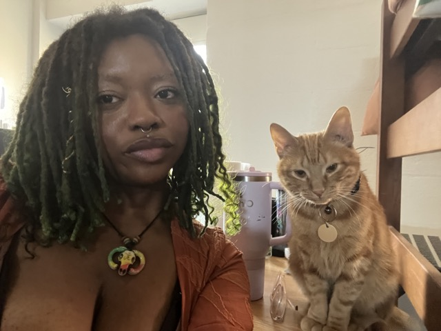
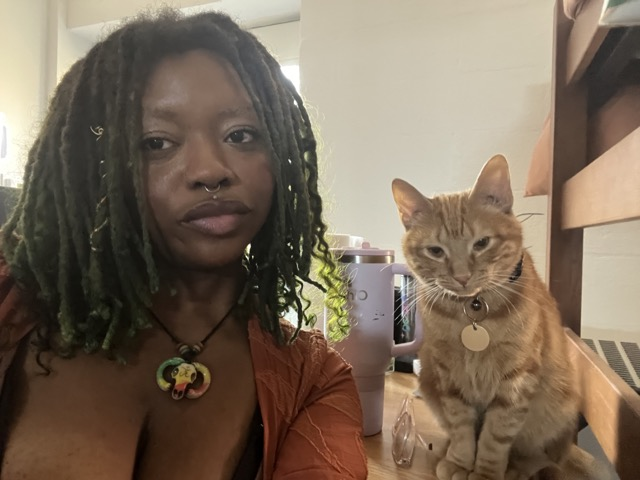

Hiiii!
I am a third year attending the Rochester Institute of Technology. I study Human Centered Computing with two concentrations in Data Analysis and Front End Development. I also have my immersion in Women & Gender Studies and my minor in Geographic Information Systems.
I was born and raised in Birmingham, AL. However, I spend most of my time in Rochester, NY.
I currently work as a Residential Advisor, Teaching Assistant, and GIS Analyst. I have experience working in areas like Digital Acessibility, Software Development, and Spatial Mapping.
I am currently looking for an Summer 2026 internship in any of these areas.